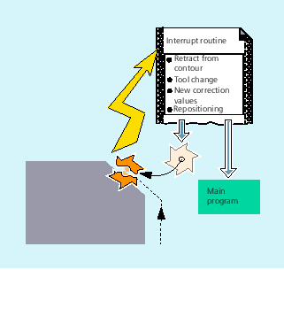

| Note |
|
The terms "asynchronous subprogram (ASUB)" and "interrupt routine" are used interchangeably in the description below to refer to the same functionality. |
A typical example should clarify the function of an interrupt routine:
The tool breaks during machining. This triggers a signal that stops the current machining process and simultaneously starts a subprogram – known as an interrupt routine. The interrupt routine contains all the statements which are to be executed in this case.
When the interrupt routine has finished being executed and the machine is ready to continue operation, the control jumps back to the main program and continues machining at the point of interruption – depending on the REPOS command (see "Repositioning at the contour").
 | Caution |
Risk of collisionIf a REPOS command has not been programmed in the subprogram, then the control goes to the end point of the block that follows the interrupted block. |